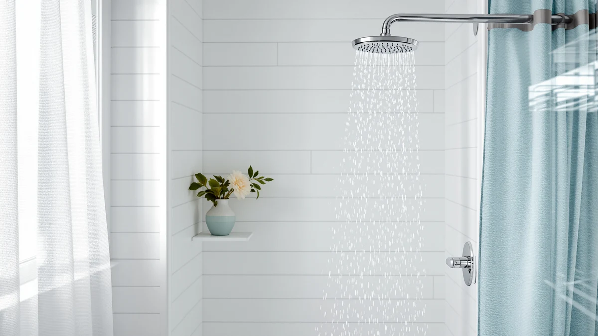

How to Clean Shower Heads with Clr: Complete Guide (2026)
Prices and picks verified as of October 2026. Independent, reader-supported reviews.


Things to Know Before You Buy
- CLR cuts through buildup vinegar can't. Cleaning a shower head with CLR targets calcium, lime, and rust deposits specifically, clearing crust that a plain vinegar soak leaves behind.
- Dilution matters. Mixing CLR at the label's one-to-one ratio with warm water clears scale without over-exposing the finish to full-strength acid.
- Finish determines soak time. Chrome and stainless hold up to a longer soak; brushed nickel, oil-rubbed bronze, and matte black need a shorter one to avoid dulling.
- Ventilation and gloves are non-negotiable. CLR gives off stronger fumes than vinegar, so work in a ventilated bathroom and keep it off your skin.
- Never mix CLR with bleach. Combining the two releases toxic chlorine gas, one of the few absolute rules in shower head cleaning.
If you're looking up how to clean shower heads with CLR, chances are a plain vinegar soak didn't cut it and the nozzles are still caked in hard, chalky scale. CLR, short for Calcium, Lime, and Rust Remover, is a stronger acid-based descaler built for exactly this kind of buildup, and it clears nozzles that vinegar leaves clogged. The process takes about an hour from start to finish, most of it spent waiting while the solution does the work.
This guide walks through the five steps: removing the head, mixing the CLR solution, soaking it, scrubbing the nozzles clean, and reattaching everything so the spray runs even again. You'll also find the mistakes that damage finishes or ruin a good head, plus a few shower heads worth considering if yours is too far gone to save.
What You'll Need
- Supplies: CLR Calcium, Lime & Rust Remover, warm water, and plumber's tape
- Tools: an adjustable wrench or pliers, a soft-bristle brush, and a bucket or zip-top bag
Step 1: Shut off the water and remove the shower head
Before you clean a shower head with CLR, shut off the water supply, either at the valve behind the shower wall or at the main if there's no dedicated shutoff. This keeps water from spraying while the head is detached and protects you from an unexpected splash of diluted cleaner.
Wrap the connection where the shower head meets the arm with a cloth or a few layers of tape to protect the finish, then grip the head and turn it counterclockwise. Most heads loosen by hand. If it's seized from mineral buildup around the threads, use pliers or an adjustable wrench over the cloth so the jaws don't scratch chrome or scuff a matte finish.
Set the rubber or fiber washer aside somewhere you won't lose it. You'll reuse it when you reattach the head in step five, and a missing washer is the most common reason a reinstalled shower head drips at the connection.
Step 2: Mix the CLR soaking solution
CLR's label calls for a one-to-one dilution with warm water for most household descaling jobs, and shower heads fall into that category. Pour the two into a small bucket, a wide bowl, or a heavy-duty zip-top bag, whichever gives the head enough room to sit fully covered.
Work in a bathroom with the window open or the fan running. CLR's fumes are sharper than vinegar's, and the acid can irritate skin on contact, so pull on a pair of rubber gloves before you pour. If you're cleaning a shower head with CLR for the first time, mix only enough solution to cover the head. There's no benefit to a stronger mix, and it raises the risk of damaging a delicate finish.
A zip-top bag works well for heads that are awkward to submerge in a bowl because of an attached hose. Pour the solution in, drop the head in face-down, press out the air, and seal it so the nozzles stay covered the whole soak.
Step 3: Submerge the shower head and let it soak
Lower the shower head into the solution so the nozzle face sits completely underwater or sealed inside the bag. CLR's label lists a soak window for calcium and lime removal, generally in the range of a few minutes up to about an hour for heavy buildup, and that range is the one to follow rather than guessing.
Check the head partway through. You'll see the white or greenish crust around the nozzles start to soften and lift, sometimes clouding the solution as it dissolves. That's the acid working. Don't extend the soak well past the label's upper limit hoping for a deeper clean. On chrome and stainless steel, a longer soak is forgiving, but on brushed nickel, oil-rubbed bronze, or matte black, sitting in CLR too long dulls or discolors the finish.
If the buildup is severe and crust remains after one soak, drain the solution, mix a fresh batch, and soak again rather than leaving the head in the same bath for hours. Fresh solution clears stubborn scale faster than letting spent CLR sit indefinitely.
Step 4: Scrub the nozzles and rinse thoroughly
Lift the head out of the bucket or bag and go over the nozzle face with a soft-bristle brush; an old toothbrush works fine. The softened crust should lift away with light pressure. Avoid steel wool, metal picks, or anything abrasive. They scratch plated and coated finishes and can tear the soft rubber or silicone tips on many modern nozzles.
Hold the head under warm running water and flush it from both sides, letting water pass back through the nozzles the way it would during a normal shower. This clears loosened mineral debris from inside the head as well as off the visible face, and it rinses away every trace of CLR. Skipping a thorough rinse is the single most common complaint with CLR, since any solution left inside the head can irritate skin or leave a chemical smell on your first shower after reinstalling it.
If a few nozzles still spray at an angle or stay blocked after scrubbing, work a toothpick or the bristle tip gently into the opening. Avoid anything metal and stiff enough to widen or tear the hole.
Step 5: Reattach the shower head and test the flow
Wrap two or three turns of plumber's tape clockwise around the shower arm threads, matching the direction you'll screw the head on so the tape doesn't unwind. Set the washer back in place if your model uses one, then thread the head on by hand until it's snug.
Finish with a quarter turn using pliers or a wrench wrapped in cloth, just enough to seat it firmly without overtightening, which can crack the threads or compress the washer unevenly. Turn the water back on and run the shower for a minute.
Watch the spray pattern and the connection. After cleaning a shower head with CLR, the jets should come out straight and even instead of splitting or spraying sideways. Check around the threads for drips; if you find any, shut the water off, add another wrap of tape, and reattach. A dry connection and an even spray mean the job's done.
Common Mistakes to Avoid
The mistake that causes the most damage is mixing CLR with bleach or any bleach-based cleaner. The combination releases chlorine gas, and that's dangerous in the small, enclosed space of a bathroom. Never combine the two, and rinse any bleach residue out of the area before you bring CLR in.
The second common error is leaving a delicate finish in the solution too long. CLR works through acid, and while chrome and stainless steel tolerate a full soak, brushed nickel, oil-rubbed bronze, and matte black can dull, discolor, or lose their coating if you ignore the label's time window. When in doubt, pull the head early and check it rather than extending the soak to guarantee a deeper clean.
Skipping the rinse is the next trap. A shower head that goes straight from the CLR bath back onto the wall without a thorough flush can leave residue inside the passages, and that residue irritates skin or leaves a chemical smell in your next shower. Run water through both sides of the head until it runs clear.
Scrubbing with steel wool or a metal pick also does lasting harm. It scratches plated finishes and tears the soft rubber or silicone nozzle tips that most heads rely on for an even spray. A soft brush and a toothpick clear the same buildup without the risk.
Finally, don't skip the water shutoff. Working on a pressurized line turns a simple cleaning job into a mess you didn't plan for.
Our Top Picks
If the shower head you just pulled apart has threads too corroded to reseat, or the nozzles stayed clogged even after a second CLR soak, replacing it costs less than you'd expect. These three cover a range of budgets and still hold up well against the hard-water buildup this guide just walked you through removing.

Editor's Pick
Peicuai Shower Head Combo 10
A combo handheld-and-fixed set with detachable heads, so you can pull either one off and soak it in CLR without disconnecting any hoses.
$28.99
Check Price on Amazon
Best Value
Dasan Thermostatic Dual Shower System
A thermostatic dual system with a wide rainfall head and separate handheld, built for owners who want consistent temperature control alongside strong spray pressure.
$599.90
Check Price on Amazon
Premium Choice
NPYSVSSS Thermostatic Shower System with
A premium thermostatic system pairing a rain shower head with a handheld wand, aimed at owners doing a full shower remodel rather than a simple swap.
$769.99
Check Price on AmazonHow often should I clean a shower head with CLR?
Most homes only need CLR for heavy buildup that a vinegar soak doesn't clear, so reach for it every few months rather than weekly.
Is CLR safe to use on all shower head finishes?
No.
Frequently Asked Questions
How often should I clean a shower head with CLR?
Most homes only need CLR for heavy buildup that a vinegar soak doesn't clear, so reach for it every few months rather than weekly. In hard-water areas, a quarterly CLR soak keeps the nozzles open; in soft-water areas, you may only need it once or twice a year, if at all.
Is CLR safe to use on all shower head finishes?
No. Chrome and stainless steel hold up well to a full soak, but brushed nickel, oil-rubbed bronze, matte black, and other coated finishes can dull or discolor if you leave them in CLR too long. Keep the soak within the label's shorter time window on those finishes and rinse immediately.
How long should a shower head soak in CLR?
Follow the time range printed on the CLR bottle, generally a few minutes for light buildup up to about an hour for heavy calcium and rust deposits. Check the head partway through, and pull it out as soon as the crust loosens rather than leaving it in the solution longer than necessary.
Can I clean a shower head with CLR without removing it from the wall?
Yes, if the head doesn't come off easily. Fill a sturdy zip-top bag with the diluted CLR solution, slip it over the head so the nozzle face sits submerged, and secure it with a rubber band. This reaches less of the internal passage than fully submerging a detached head, but it clears surface buildup without any tools.
What if the shower head is still clogged after a CLR soak?
Drain the old solution, mix a fresh batch, and soak it again rather than extending the first soak for hours. Afterward, scrub the nozzle face with a soft brush and work a toothpick into any opening that's still blocked. If several nozzles stay clogged despite repeated soaks, the internal filter screen at the connector may be the real obstruction, and that needs a separate cleaning or replacement.
Verdict
Knowing how to clean shower heads with CLR gives you a reliable fix for mineral buildup that a plain vinegar soak leaves behind. The process stays simple: shut off the water, remove the head, mix a one-to-one CLR solution, soak it for the time the label recommends, scrub the nozzles clean, and rinse thoroughly before reattaching everything with fresh plumber's tape. Respect the soak time on delicate finishes, never mix CLR with bleach, and don't skip the final rinse, and you'll avoid the mistakes that damage a head instead of cleaning it.
If your current head won't bounce back even after a second soak, corroded threads and worn-out internal screens are common culprits that no amount of CLR will fix. The Peicuai Shower Head Combo 10 makes a reasonable replacement in that case, since its detachable design lets you repeat this same cleaning routine without disconnecting any hoses the next time hard water catches up with it.